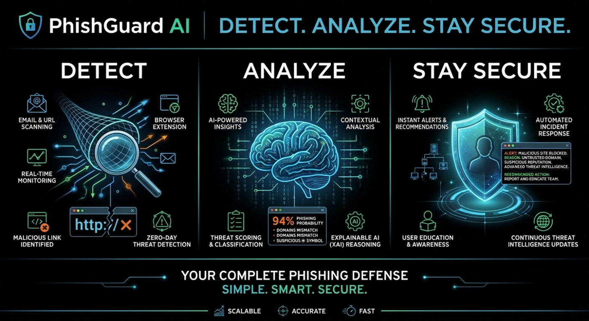
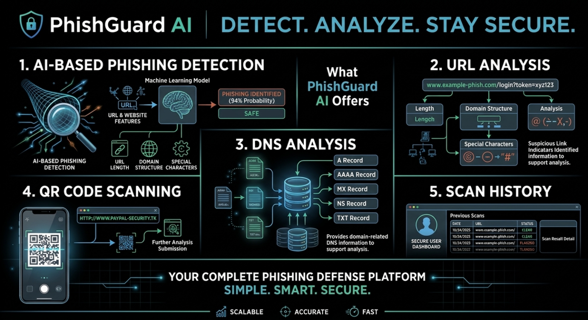
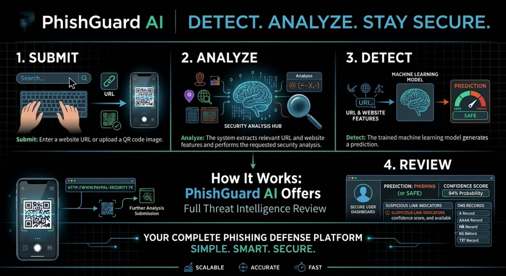
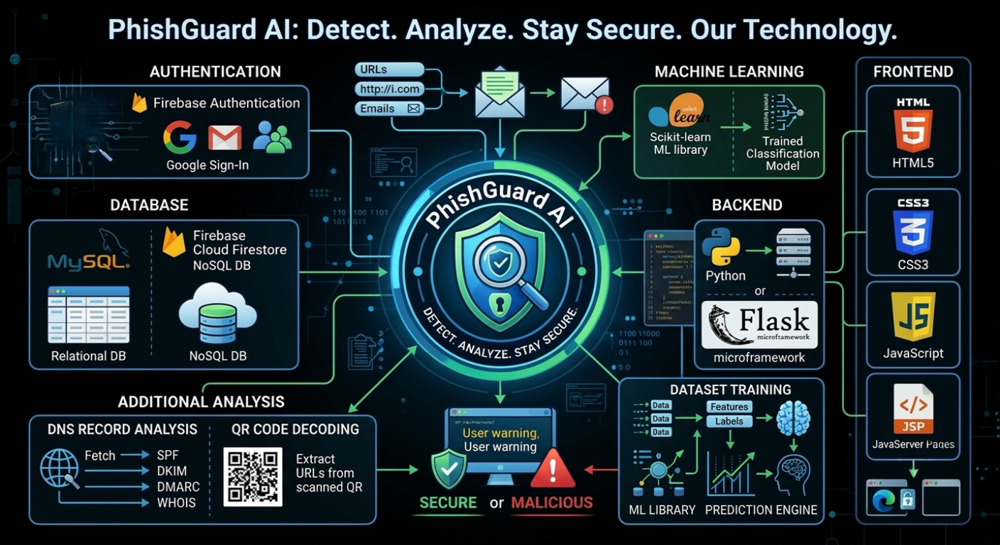

About PhishGuard AI
Preemptive battle with phishing
Protect yourself, protect your fake websites.Detect. Analyze. Stay Secure.

Who We Are
PhishGuard AI is an intelligent, machine learning-based phishing detection and web security analysis system designed to help users identify potentially malicious websites and stay safer online.
As cyber threats continue to evolve, phishing attacks have become a common method of stealing sensitive information, including login credentials, personal details, and financial data. PhishGuard AI aims to make website security analysis more accessible by combining machine learning techniques with multiple website analysis features.
Our Mission
Our mission is to provide users with a simple and accessible platform for identifying suspicious URLs and understanding potential website security risks. We aim to encourage safer browsing habits through automated analysis, informative results, and user-friendly security tools.

What PhishGuard AI Offers
1. AI-Based Phishing Detection
Uses a trained machine learning model and extracted URL and website features to classify submitted URLs and identify potentially phishing websites.
2. URL Analysis
Examines different characteristics of a URL, such as its length, domain structure, special characters, and other relevant indicators that may help identify suspicious links.
3. DNS Analysis
Provides domain-related DNS information, including available A, AAAA, MX, NS, and TXT records, to support additional domain analysis.
4. QR Code Scanning
Allows users to upload a QR code image and extract its embedded content. If the decoded content is a valid HTTP or HTTPS URL, it can be submitted for further analysis.
5. Scan History
Allows authenticated users to review their previous URL scans and access their scan results.

How It Works
PhishGuard AI follows a straightforward process:
- Submit:
Enter a website URL or upload a QR code image.
- Analyze:
The system extracts relevant URL and website features and performs the requested security analysis.
- Detect:
The trained machine learning model generates a prediction.
- Review:
View the prediction, confidence score, and available analysis details.

Our Technology
PhishGuard AI combines machine learning, web technologies, and security-related analysis tools.
- Frontend: HTML5, CSS3, JavaScript, and JSP.
- Backend: Python and Flask.
- Machine Learning: Scikit-learn and a trained classification model.
- Database: MySQL and Firebase Cloud Firestore.
- Authentication: Firebase Authentication with Google Sign-In.
- Additional Analysis: DNS record analysis and QR code decoding.
Our Vision
We envision a safer digital environment where users can make more informed decisions before visiting unfamiliar websites or interacting with suspicious links.
PhishGuard AI is developed as an academic minor project to explore the practical application of artificial intelligence and machine learning in cybersecurity.